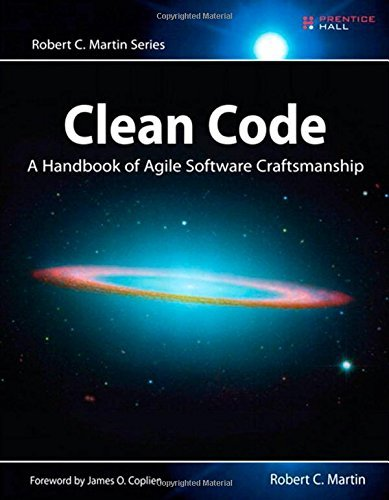

Apa itu Clean Code?
Clean Code adalah istilah yang digunakan untuk menggambarkan kode yang ditulis dengan baik, mudah dibaca, dan mudah dipelihara. Kode yang bersih tidak hanya berfungsi dengan benar, tetapi juga memiliki struktur yang rapi dan mudah dipahami oleh programmer lain.
"Clean code always looks like it was written by someone who cares."
— Robert C. Martin, Clean Code: A Handbook of Agile Software Craftsmanship
Pada artikel ini, kita akan membahas prinsip-prinsip dasar Clean Code dan bagaimana menerapkannya dalam praktik pemrograman.
Clean Code

Clean Code adalah konsep dalam pemrograman yang menekankan pentingnya menulis kode yang mudah dibaca, dipahami, dan dipelihara. Konsep ini diperkenalkan oleh Robert C. Martin dalam bukunya yang berjudul "Clean Code: A Handbook of Agile Software Craftsmanship".
Apa kegunaan dari Clean Code jika program tetap bisa dijalankan dengan lancar? kode memang bisa dibaca oleh mesin, tetapi jika oleh orang lain dalam kerja tim bagaimana? Ingin perusahaan yang kau dirikan memiliki bus factor?
Prinsip Clean Code
Prinsip-prinsip Clean Code meliputi:
- Kode harus mudah dibaca: Nama variabel, fungsi, dan kelas harus menjelaskan tujuan dari kode tersebut.
- Kode harus sederhana: Hindari kompleksitas yang tidak perlu.
- Kode harus modular: Bagi kode menjadi bagian-bagian kecil yang dapat dikelola secara independen.
Selain itu, Clean Code juga menekankan pentingnya menulis kode yang dapat dipelihara dan diperbarui dengan mudah. Mari kita mulai dari prinsip pertama: Kode harus mudah dibaca.
Baca Juga: Code Reading: kemampuan memahami kode hanya dengan melihat kode
1. Kode harus mudah dibaca
Coba perhatikan kode berikut:
function t(h, k){
return h * k;
}Apa yang kau pikirkan saat pertama kali melihat kode di atas? Kau mungkin berfikir "t" ini apaan? h dan k itu parameter untuk apa? Sangat membingungkan bukan? Nah, coba lihat kode berikut:
function totalHarga(harga, kuantitas){
return harga * kuantitas;
}Bagaimana dengan sekarang? lebih mudah dipahami kan? Jadi. Intinya gunakan nama yang deskriptif dan hindari singkatan yang tidak perlu. Maksud dari singkatan tidak perlu ini adalah singkatan yang tidak jelas. Kalau misalkan kau menulis kode koordinat:
function koordinat(x, y){
console.log(`Koordinat: (${x}, ${y})`);
}Ini masih boleh dilakukan. Sekali lagi, gunakan nama yang deskriptif dan hindari singkatan yang tidak jelas. Kau akan bingung sendiri jika tidak menggunakan nama variabel yang jelas.
2. Sederhana
Prinsip kedua dari clean code adalah membuat kode sederhana. Kode yang sederhana lebih mudah dipahami, di-maintain, dan di-debug. Hindari kompleksitas yang tidak perlu dalam penulisan kode. Sebagai contoh:
function hitungDiskon(harga, diskon){
if(diskon > 0){
return harga - (harga * diskon);
} else {
return harga;
}
}Kode di atas bisa disederhanakan menjadi:
function hitungDiskon(harga, diskon){
return diskon > 0 ? harga - (harga * diskon) : harga;
}Mana yang lebih baik? sudah jelas yang paling atas, yang dijelaskan menggunakan if-else. Kenapa? karena bayangkan seorang junior developer yang baru belajar, lalu ia melihat tanda ? pada kodenya, mungkin ia berfikir "Ini tanda ? untuk apa". Nah, memang kelihatan keren jika menggunakan ternary operator. Tapi... jika kau punya tim yang tidak terlalu familiar dengan ternary operator, mungkin akan lebih baik menggunakan if-else.
Oh ya, argumen atau parameter di dalam fungsi lebih baik jangan terlalu banyak, cukup 2-3 argumen.
Baca Juga: Git: Sang pengontrol versi terbaik andalan programmer
3. Modular / "Satu fungsi, Satu tugas"
Dalam clean code, kau harus membuat kode yang modular. Maksud dari modular adalah membagi kode menjadi bagian-bagian kecil yang memiliki satu tugas spesifik. Ini membuat kode lebih mudah dipahami, di-maintain, dan di-debug.
Coba lihat kode berikut:
def proses_checkout(keranjang):
total = sum(item['harga'] for item in keranjang)
for item in keranjang:
database.kurangi_stok(item['id'], item['jumlah'])
email.kirim("pembeli@email.com", f"Total belanjaan Anda: {total}")Kode di atas melakukan beberapa tugas sekaligus: menghitung total harga, mengurangi stok di database, dan mengirim email. Ini membuat kode sulit dipahami dan di-maintain. Sebaiknya, pisahkan kode menjadi fungsi-fungsi kecil yang memiliki satu tugas spesifik:
def hitung_total(keranjang):
return sum(item['harga'] for item in keranjang)
def update_stok(keranjang):
for item in keranjang:
database.kurangi_stok(item['id'], item['jumlah'])
def kirim_email(total):
email.kirim("pembeli@email.com", f"Oi! Total Lu foya-foya: {total}")
Nah, kode di atas lebih baik karena setiap fungsi memiliki tugasnya masing-masing.
Baca Juga: Terminal: Kawan Sejati Programmer
4. Komentar
Komentar? komentar untuk apa? bukannya enggak ngaruh ya? emang enggak ngaruh tapi ngaruh kocak!
Biar kuperjelas. Sebuah kode yang baik harus dapat menjelaskan dirinya sendiri ketika orang lain pertama kali melihatnya. Sebagai contoh coba lihat kode berikut:
umur = 17
if umur >= 18:
print("Dewasa")Kalau kau lihat kode di atas, kau pasti langsung paham kan? kalau umur lebih dari sama dengan 18 maka dia dewasa. Nah, coba lihat kode berikut:
# variabel berisi nilai 17
umur = 17:
# jika umur lebih dari sama dengan 18 maka dia dewasa
if umur >= 18:
print("Dewasa")Maksudku begini loh, kode diatas sudah sangat menjelaskan dirinya, kau tidak perlu menambahkan komentar. Ayolah, jika kau menambahkan komentar untuk kode yang sudah sangat jelas, kau malah membuat kebisingan visual.
Oh ya, aku pernah melihat kode dengan komentar seperti ini:
# Aku yang tahu kegunaan kode ini, tapi sekarang hanya tuhan yang tahuMalah jadi tempat curhat. Ingat, kau seorang professional. Kau tidak perlu menambahkan komentar yang tidak perlu. Kalau ingin curhat silakan pergi ke psikiater.
5. Gaya Penulisan Variabel
Penulisan variabel tidak berpengaruh terhadap performa kode, tetapi dapat mempengaruhi keterbacaan dan pemeliharaan kode. Ada beberapa gaya penulisan variabel yang bisa kau gunakan, misalnya:
IniAdalahVariabel #PascalCase ini_adalah_variabel #snake_case iniAdalahVariabel #camelCase ini-adalah-variabel #kebab-case
Gaya penulisan variabel yang digunakan harus konsisten di seluruh kode. Pilih satu gaya penulisan dan gunakan secara konsisten. jujur saja aku lebih suka menggunakan snake_case karena lebih mudah dibaca, atau yang sering kugunakan juga adalah CamelCase terutama jika menggunakan Javascript.
Kenapa hal ini penting? karena kode yang memiliki perbedaan dalam penggunaan huruf kapital bisa dianggap berbeda. Misalnya:
nilai = 1
Nilai = 1
NiLai = 1
NILaI = 1Kata yang sama, tetapi dianggap berbeda. Bahasa pemrograman bersifat case-sensitive.
Kesimpulan
Jadi, kesimpulannya adalah keterbacaan kode sangat penting dalam pengembangan perangkat lunak. Kode yang mudah dibaca dan dipahami akan mempermudah pemeliharaan dan kolaborasi. Dengan menerapkan prinsip-prinsip clean code, kita dapat menulis kode yang lebih baik dan lebih efisien. Kau bisa pelajari lebih lanjut dari video buatan Arwildo di bawah ini: Link ke Video.